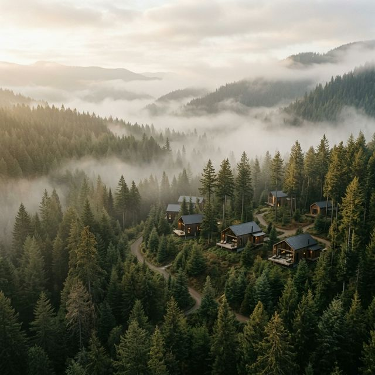

Seven days of noble silence, ancient Vipassana practice, and deep forest immersion. Surrender the noise. Discover the stillness beneath.
Arrive at the retreat center by 3:00 PM. You'll be welcomed with warm herbal tea and shown to your private forest cabin. After settling in, join us for the Opening Circle — our last group conversation before noble silence begins. Dinner together, then silence commences at 9:00 PM.
Wake at 5:00 AM to a gentle bell. Morning meditation (90 min) followed by mindful breakfast in silence. Guided Vipassana instruction sessions: 3 sittings of 1 hour each. Afternoon: walking meditation on the forest trail. Evening: group sitting and dharma talk from our lead teacher.
The most challenging day for most guests. Body scanning meditation, 4-hour group sitting blocks. Integration journaling (written — no speaking). Optional 1:1 teacher consultation (in whisper). Late afternoon: restorative yin yoga. Herbal medicine workshop with our naturopath.
Adhitthana — strong determination sittings. Morning metta meditation (loving-kindness). Afternoon: free time for solitary nature walk. Water therapy in our natural stone pool. Evening fire ceremony (in silence, deeply moving). Most guests report a significant shift on this day.
Morning flow yoga to open the body after days of sitting. Continue deep Vipassana practice with greater ease. Afternoon: creative expression in silence (art, drawing — provided). Sound bath healing with Tibetan bowls. Individual teacher interviews for 15 minutes.
Final full-day of deep practice. Morning: extended loving-kindness meditation for self and all beings. Silence ends at 5:00 PM. The first moment of breaking silence is often the most powerful of the entire retreat. Dinner together with sharing circle. Laughter, tears, connection.
Final morning meditation together (optional). Integration breakfast and re-entry conversation: how to carry the practice into daily life. Transportation arranged. Receive your personal meditation schedule and guide. Depart by 12:00 PM — a different person than who arrived.
🔒 Secure checkout · Free cancellation 30 days prior

Are you ready to meet yourself in the stillness? Spots for our January retreat are filling fast.
Secure Your Spot →